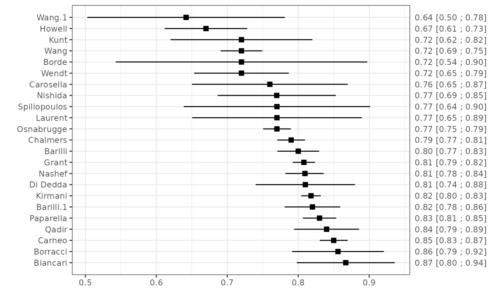
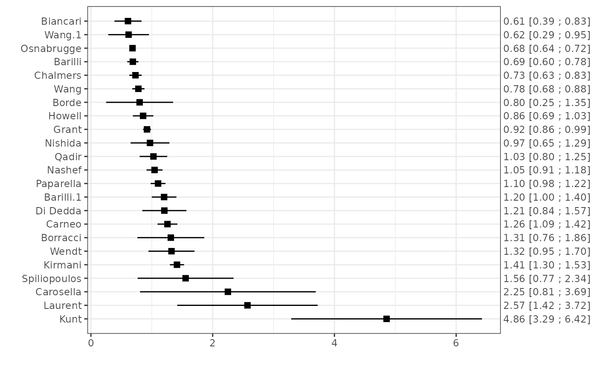

Function to create forest plots for objects of class "mm_perf".
Usage
# S3 method for class 'mm_perf'
plot(x, ...)Arguments
- x
An object of class
"mm_perf"- ...
Additional arguments which are passed to forest.
Details
The forest plot shows the performance estimates of each study with corresponding confidence intervals.
References
Lewis S, Clarke M. Forest plots: trying to see the wood and the trees. BMJ. 2001; 322(7300):1479–80.
Examples
data(EuroSCORE)
# Calculate the c-statistic and its standard error
est1 <- ccalc(cstat = c.index, cstat.se = se.c.index, cstat.cilb = c.index.95CIl,
cstat.ciub = c.index.95CIu, N = n, O = n.events, data = EuroSCORE, slab = Study)
plot(est1)

# Calculate the total O:E ratio and its standard error
est2 <- oecalc(O = n.events, E = e.events, N = n, data = EuroSCORE, slab = Study)
plot(est2)
